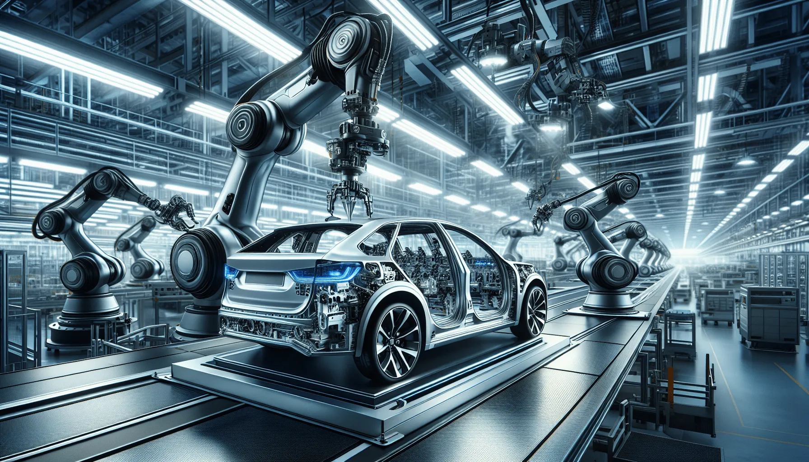
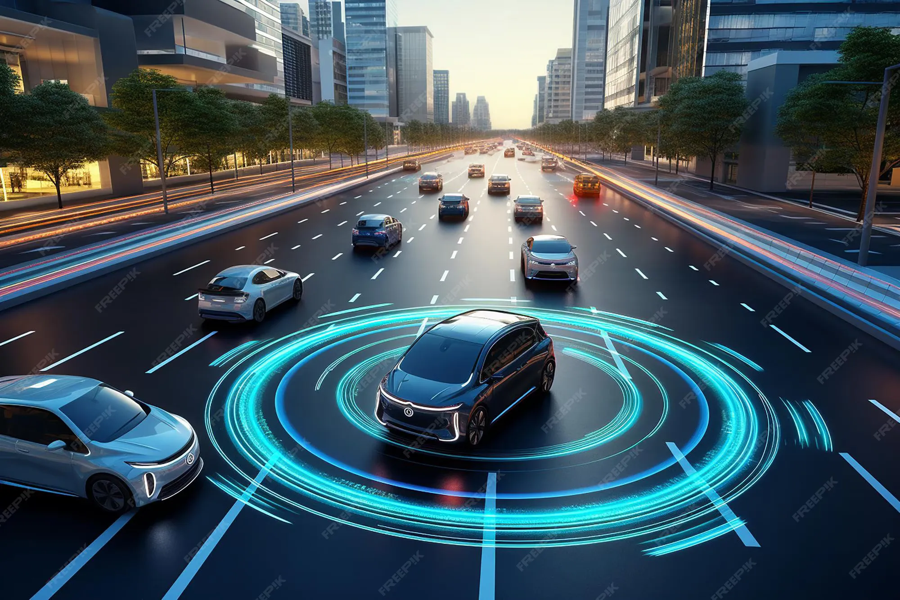
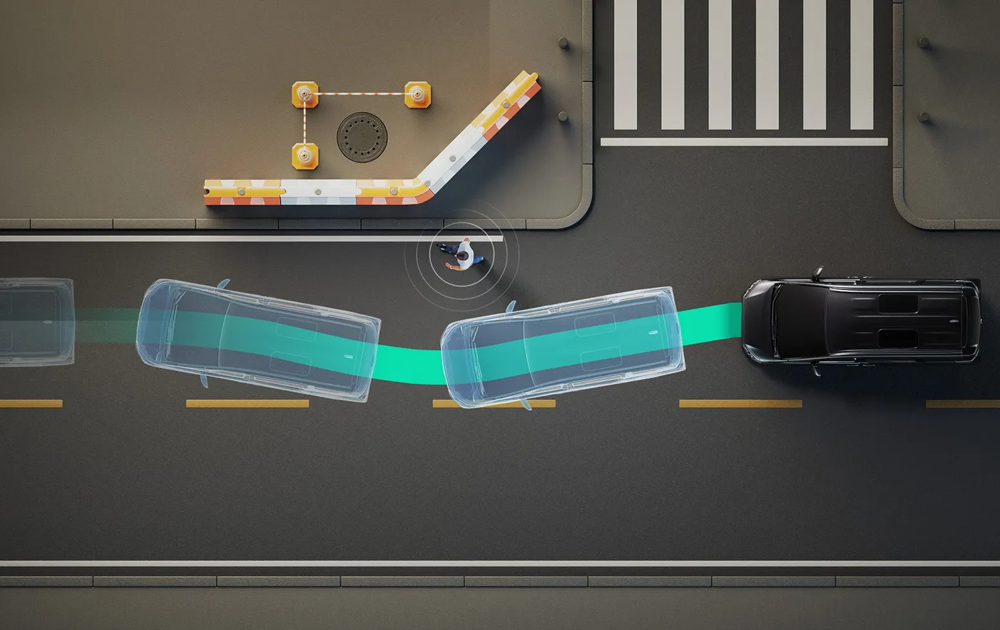
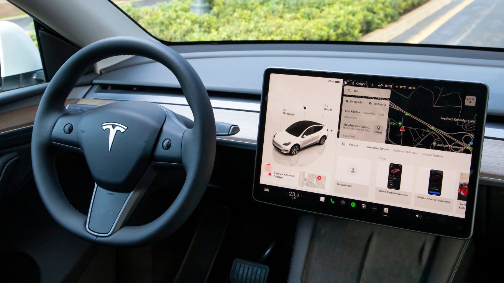
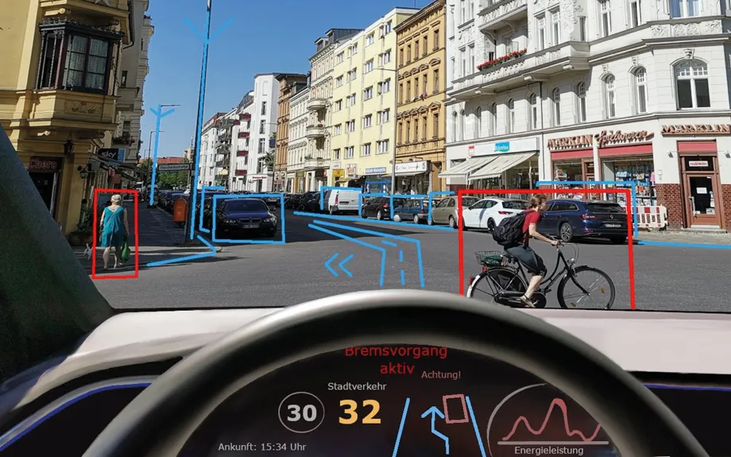
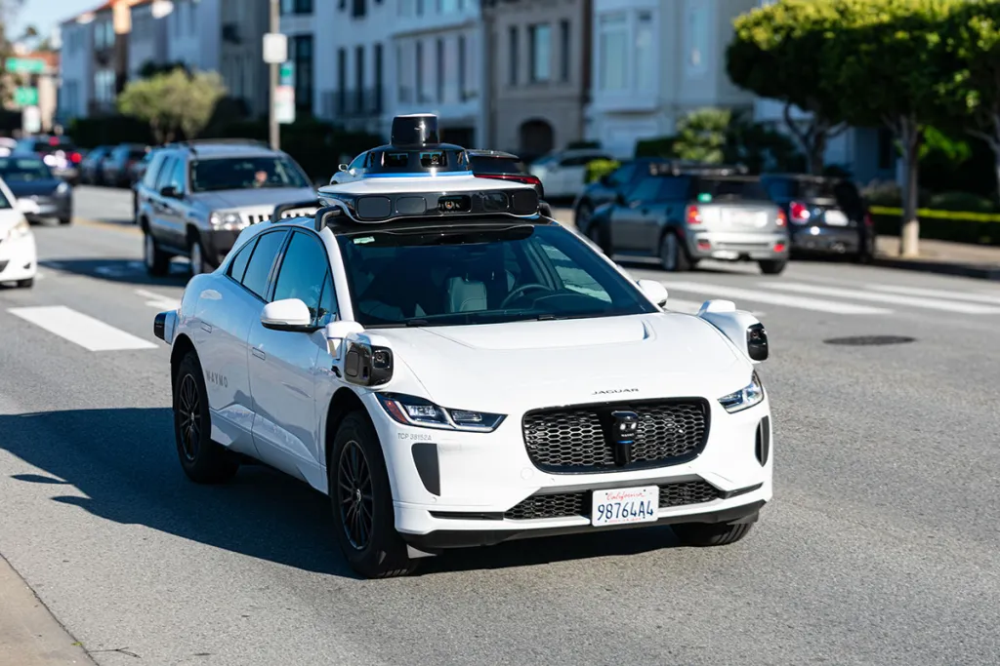

Inteligencia Artificial
¿Cuál es el panorama en el sector automotriz?
La industria automotriz está experimentando una transformación significativa impulsada por la inteligencia artificial (IA) y las tecnologías digitales.
Este cambio no solo se refleja en los autos eléctricos, sino también en la integración de soluciones basadas en software, lo que da lugar al concepto de Vehículo Definido por Software (Software-Defined Vehicle). Esto significa que los autos ya no solo se componen de componentes mecánicos y de hardware, sino que gran parte de su valor radica en el software y las actualizaciones que pueden mejorar y modificar su funcionamiento a lo largo de su vida útil.

Sector Automotriz
La adopción de nuevas herramientas
Sistemas avanzados de asistencia al conductor como frenado automático de emergencia, control crucero adaptativo, asistencia de mantenimiento de carril, detección de peatones, advertencia de punto ciego. Todos estos usan IA de visión y fusión de sensores.
Conducción parcialmente automatizada, tenemos que el auto puede acelerar, frenar y girar en ciertas condiciones (autopista, buen clima), pero el conductor sigue siendo responsable.
Monitoreo del conductor permanente por mediio de cámaras internas o sensores que detectan distracción o fatiga y dan una alerta.
Servicios inteligentes para el usuario como lo son asistentes de voz basados en IA que explican testigos del tablero, recomiendan ir al taller o buscan la mejor ruta.
Aplicaciones
Percepción: el vehículo “ve” con cámaras, radar, lidar y ultrasonido.
Interpretación: algoritmos de visión e IA detectan peatones, carriles, señales, otros autos.
Toma de decisiones: un modelo elige la acción más segura (frenar, avisar, cambiar de carril).
Aprendizaje y retroalimentación: el sistema registra escenarios reales para mejorar en versiones futuras.

Retos a enfrentar
¿Cuáles son aquellas limitantes en la actualidad?
Probar que es segura siempre: La IA tiene que “ver” bien de día, noche, lluvia, niebla y con calles mal pintadas.
¿Quién paga si hay choque?: Hoy no está claro si la culpa es del conductor, de la marca o del proveedor del algoritmo. Por eso muchas marcas se quedan en Nivel 2, donde la ley dice: “el responsable es el humano”.
Integrar muchas tecnologías a la vez: Cámaras, radar, lidar, mapas, IA a bordo y conexión a la nube tienen que trabajar sincronizados. Si un sensor falla, el sistema debe seguir siendo seguro.
¿Cuáles son aquellas limitantes pendientes por resolver?
Subir de Nivel 2 a Nivel 3/4 sin que explote lo legal: Cuando el coche sí conduce (L3-L4), la responsabilidad se mueve del humano al sistema. Hacen falta leyes y seguros pensados para eso.
Reglas globales más parecidas: Hoy EE. UU., Europa y Asia piden cosas distintas. Las marcas necesitan estándares más unificados para no certificar mil veces.
Ciberseguridad del vehículo conectado: Si todo se actualiza OTA y el coche está en línea, hay que blindar el software y las actualizaciones.

Actualidad
Panorama que vive la industria
Actualmente, la inteligencia artificial es una de las tecnologías más importantes dentro de la industria automotriz. Grandes marcas como Tesla, BMW, Toyota y Mercedes-Benz ya la utilizan para mejorar la seguridad, la eficiencia y la comodidad de los vehículos.
Los autos modernos incorporan sistemas avanzados de asistencia al conductor (ADAS), como el frenado automático, el control de crucero adaptativo y el mantenimiento de carril, todos impulsados por IA.
Por otra parte en las fábricas, la IA también se usa para automatizar la producción, predecir fallas mecánicas y optimizar la logística, reduciendo costos y errores humanos.

Privacidad y manejo de datos
Garantías y protección al usuario
Los autos inteligentes pueden guardar:
Ubicación.
Velocidad.
Video interno y externo.
Historial de rutas.
Si eso se usa para entrenar IA o para vender servicios, se necesita transparencia y protección de datos. Los estudios de consumidores mustran que la gente si quiere seguridad, pero no quiere que sus datos se usen sin permiso.

Futuro
¿Hacia dónde se dirige la industria automotriz?
En el futuro, la inteligencia artificial transformará por completo la forma en que nos transportamos. Se espera que los vehículos sean totalmente autónomos, capaces de desplazarse sin intervención humana y comunicarse entre sí para evitar accidentes y mejorar el tráfico.
Además, los autos inteligentes estarán conectados a las ciudades mediante redes 5G y sistemas de datos en la nube, lo que permitirá una movilidad más segura, rápida y ecológica.
La IA también permitirá crear experiencias personalizadas, donde el vehículo reconozca al conductor, adapte su entorno y planifique rutas según sus hábitos y necesidades.
